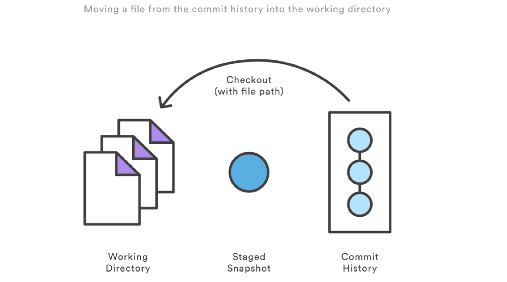

高级管理¶
查看¶
git checkout用于切换分支
checkout 一个文件和带文件路径执行
git reset相似，除了它更改的是工作目录而不是缓冲区。不像提交层面的 checkout 命令，它不会移动 HEAD 引用，也就是你不会切换到别的分支上去。git checkout -- file.ext撤销对文件的修改如果你缓存并且提交了checkout 的文件，它具备将某个文件回撤到之前版本的效果。注意它撤销了这个文件后面所有的更改，而
git revert命令只撤销某个特定提交的更改。
回滚¶

--mixed默认选项。缓存区域和你指定的提交同步，但工作目录不受影响--soft缓存区和工作目录都不会改变--hard缓存区域和工作目录都同步到你指定的提交

这些参数在工作当中都有什么不同的意义呢？虽然在调用时加上 --hard 选项可以令 git reset 成为一个危险的命令（注释：可能导致工作目录中所有当前进度丢失！）不加选项默认调用 git reset --mixed 并不危险，它只会修改暂存区域。
git reset HEAD~2
上面示例命令中 HEAD~2 是语法糖，含义是将 HEAD 向前移动两个提交。
文件层操作¶

当检测到文件路径时，git reset 将缓存区同步到你指定的那个提交。比如，下面这个命令会将倒数第二个提交中的 foo.py 加入缓存区中，供下一个提交使用。
git reset HEAD~2 foo.py
运行 git reset HEAD foo.py 会将当前的 foo.py 从缓存区域中移除出去，而不会影响工作目录中对 foo.py 的更改。
–soft、–mixed 和 –hard 对文件层面的 git reset 毫无作用，因为缓存区域中的文件一定会变化，而工作目录中的文件一定不变。
使用场景¶
| 命令 | 作用域 | 常用场景 |
|---|---|---|
git reset |
提交层面 | 版本回滚，在私有分支上舍弃一些没有提交的更改 |
| 文件层面 | 将文件从缓存区中移除 | |
git checkout |
提交层面 | 切换分支或查看旧版本 |
| 文件层面 | 舍弃工作目录中的更改 | |
git revert |
提交层面 | 在公共分支上回滚更改 |
| 文件层面 | （没有） |
git reflog 命令分析你所有分支的头指针的日志来查找出你在重写历史上可能丢失的提交。